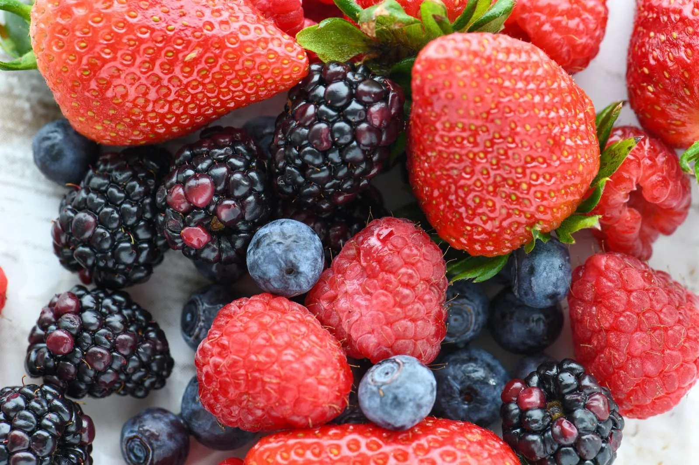
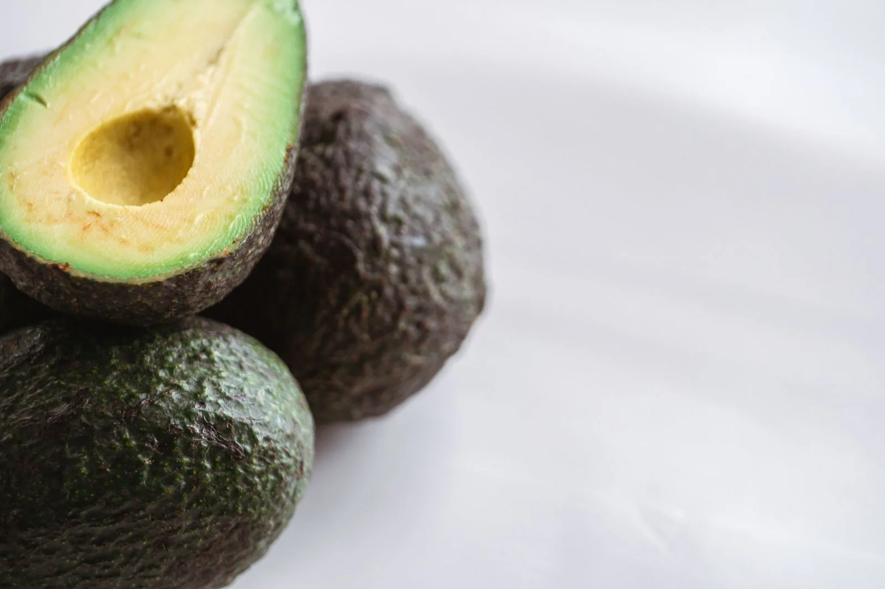
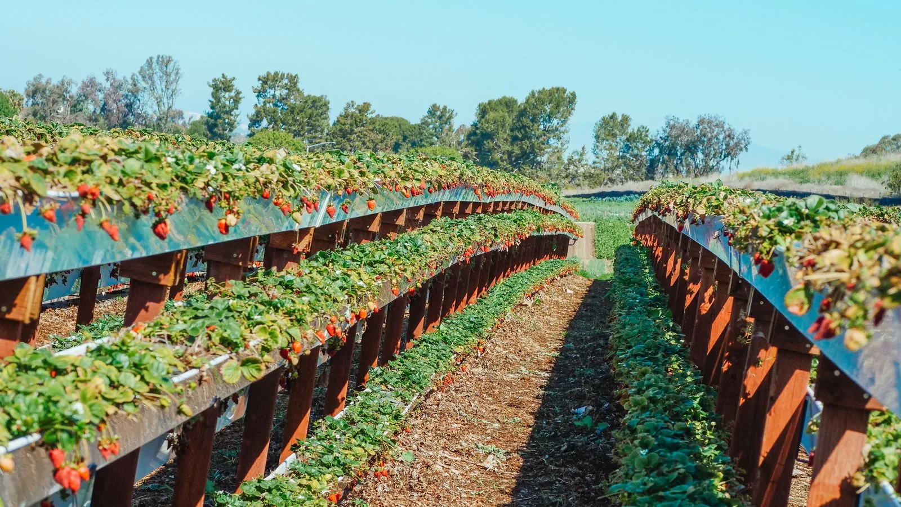

Nuestra especialidad
Berries
Fresa, zarzamora, arándano y frambuesa.
Desde Zamora, Michoacán
Berries, aguacates y más productos del campo mexicano. En Mis 7 Ángeles creemos en el trabajo en equipo y en relaciones que crecen con cada cosecha.

Quiénes somos
Somos una empresa establecida en Zamora, Michoacán. Nuestro objetivo es crecer con pasos firmes en nuestra región y en los lugares donde tenemos presencia, poniendo a las personas y al trabajo en equipo en el centro de cada decisión.
Colaboradores, productores, proveedores y clientes forman parte de una misma historia: llevar lo mejor del campo a más mesas.
Así trabajamosNuestra identidad
El sol, la tierra y nuestros frutos se reúnen en el logo original de Mis 7 Ángeles. Lo hemos restaurado en alta resolución para que puedas verlo con todos sus detalles.
Ver logo en alta resoluciónNuestro portafolio
Una selección que reúne frutos rojos, aguacate y otros cultivos presentes en nuestra red de producción.
Fresa, zarzamora, arándano y frambuesa.

Un fruto esencial en nuestro portafolio.

Higo, piña, mango, papaya, limón, brócoli y hortalizas.
Fotografías ilustrativas de los productos; no muestran instalaciones de la empresa.

Nuestro origen
Desde Zamora conectamos el esfuerzo de agricultores, equipo operativo y áreas de calidad y logística. Nuestra presentación identifica actividad de campo en cinco estados de México.
Lo que nos mueve
Creemos que el crecimiento se construye junto a quienes cultivan, colaboran y confían en nosotros.
Buscamos mejorar nuestros servicios y productos con atención al detalle en campo, calidad y logística.
Una relación profesional, honesta y cordial con clientes, productores y proveedores.
Contacto
Cuéntanos qué producto buscas o cómo te gustaría colaborar. Nos encantará conocer tu proyecto.